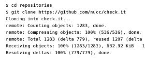
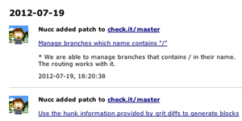
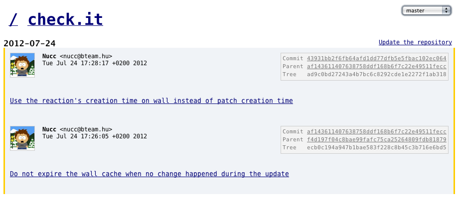
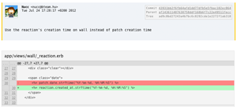
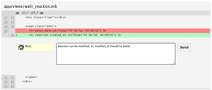
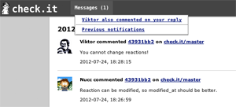
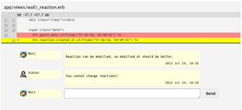
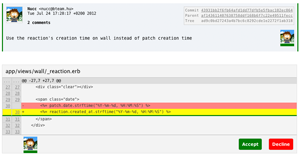

Register your repository
Register your project repository with using git clone command. After this simple step you can see your branches after login!

Follow the changes
You can follow the new commits in the repositories on the wall. You won't miss any changes on the code base!

Parallel working
You can view only commits contained by a feature branch! Other teams are not disturbing you!

Check the changes
You can check the differences applied by the commit!

Make comments
Just comment the code if you did it in a different way! Your message will appear on the wall.

Notifications
Team members get notification messages when their commit has been commented. You can send daily mails about unread messages too!

Conversations
Clicking to the notification you can see the commented lines with yellow background! Just join to the conversation!

Acceptance
You can accept or decline a patch! If the team accepts a patch, the left border of the commit message changes to green!

Download
You can download it from github where you can find a short description about installing too!